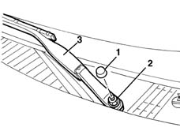
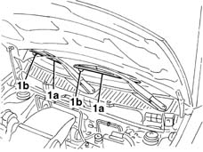

5050B34 windscreen wiper arm/s complete with blade - r+r
- Path
- Procedures > 50 AUXILIARY UNITS > 5050 SCREEN WASHERS AND HEADLAMP WASH/WIPE > 5050B windscreen wash/wipe > 5050B34 windscreen wiper arm/s complete with blade - r+r
- Kind
- repair procedure (removal / refitting; the operation number is the code)
- Applies to
- all engines; all production periods
- Interactive page
- https://sloeber94.github.io/elrnDB-lYpsln/en/#/2429350
Applies to: all engines; all production periods
 Removing
Removing
 Refitting
Refitting1. Release the nut cover.
2. Undo the nut and recover the washer.
3. Remove the arm.

Applies to: all engines; all production periods
Refitting
RemovingCheck the wiper blade and the arm are undamaged.
1. Position the arm in its seat, checking that arms (1a) are aligned with references (1b) screen-printed on the glass when at rest.

Applies to: all engines; all production periods
Fit the washer and tighten the nut.
Fit the nut cover.
Check that the windscreen wiper works properly.
Topics that link to this page (7)
- 5040A57 evaporator inlet pipe - r r
- 5050B10 front windscreen washer jets - r+r clean and/or position
- 5050B14 PIPES and connectors for front windscreen washer. - R.R.
- 5050B38 windscreen wiper assembly - r+r or repair
- 5050B42 windscreen wiper motor - r+r
- 7035A18 windscreen glass r r including cleaning of housing
- 7210E22 R.R. WINDSCREEN BASE TRIM